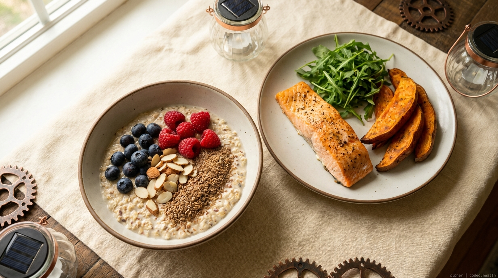
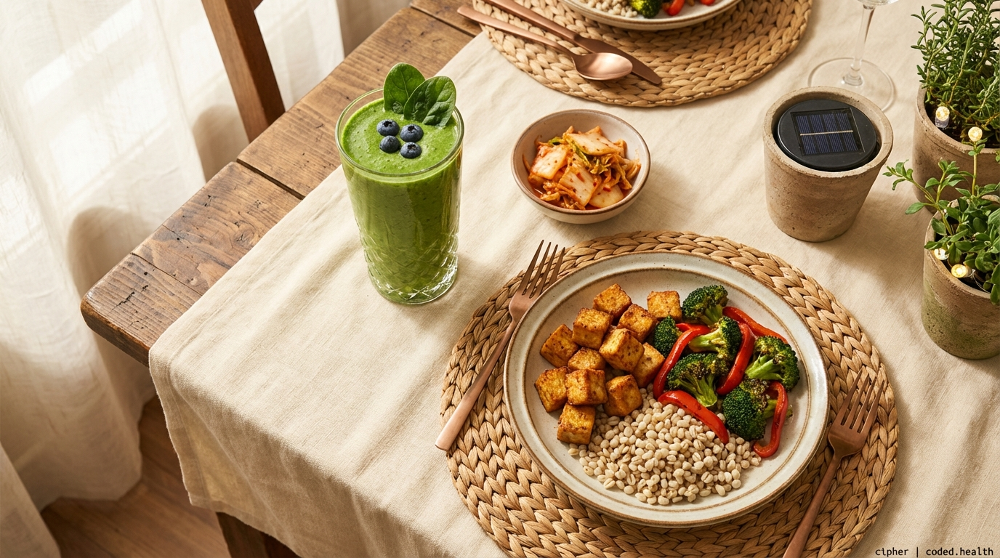
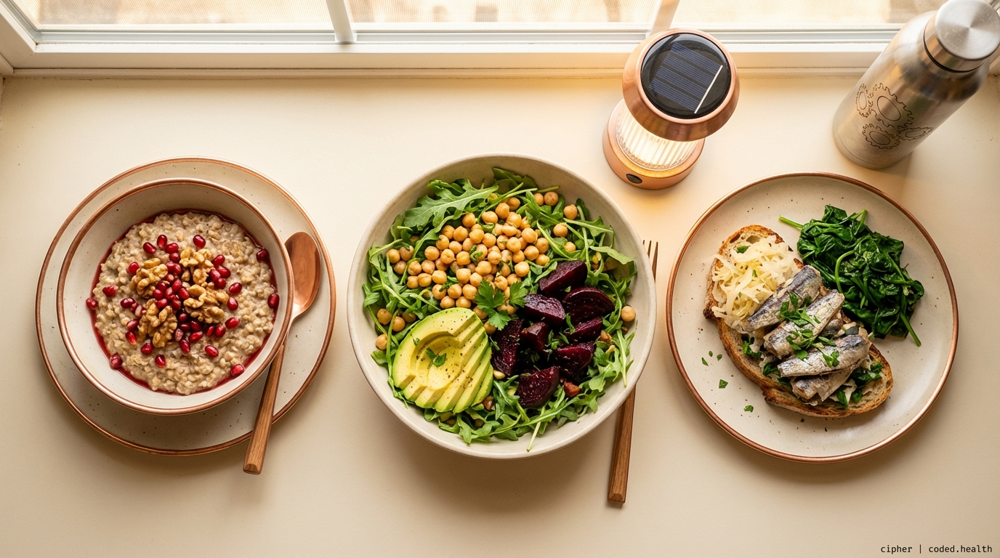
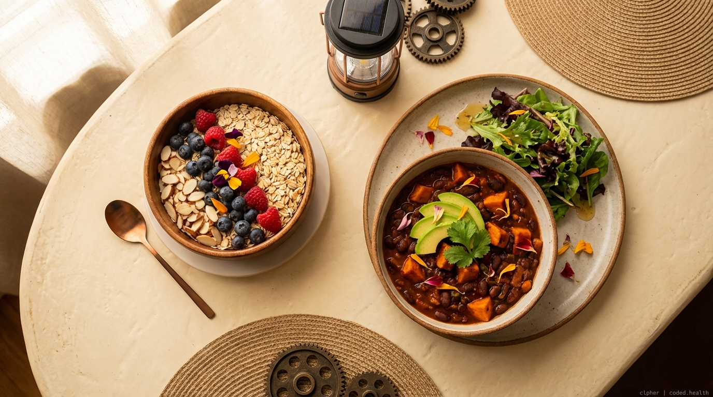
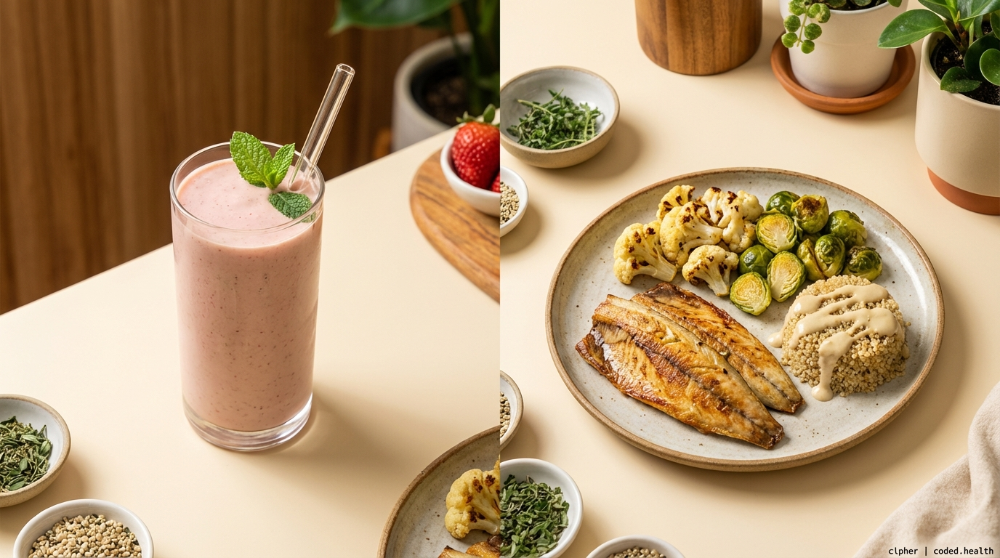
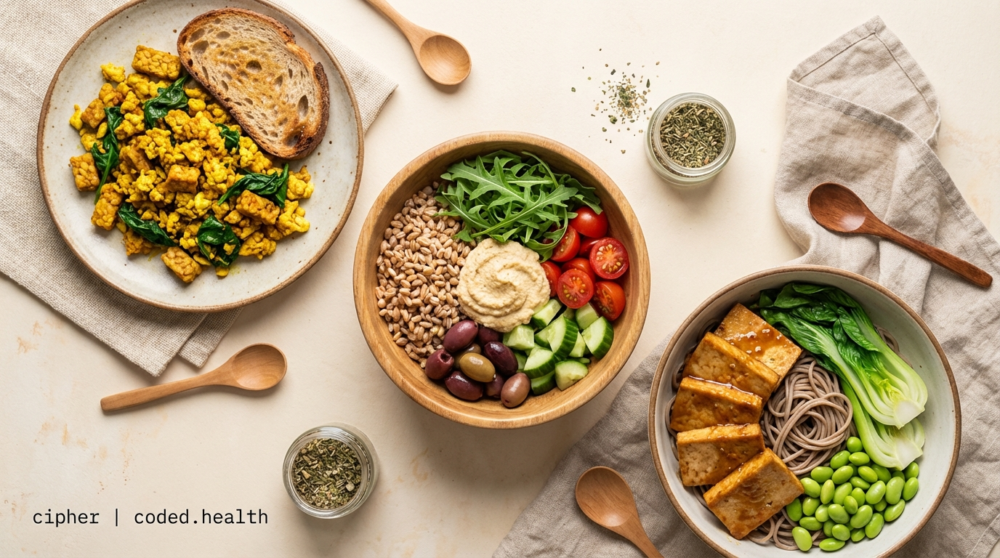
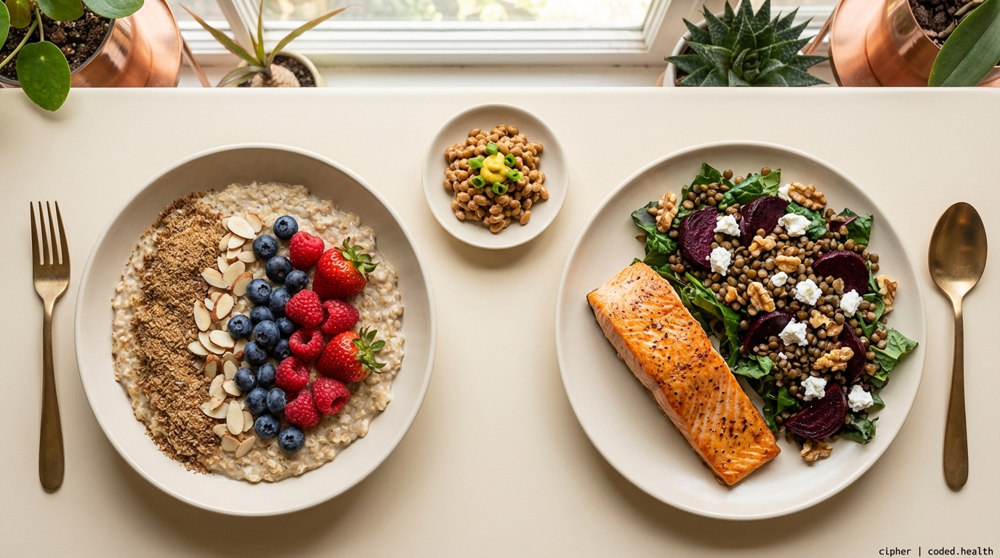

Supplements & Meal Plan
Portfolio Diet + Mediterranean — one week, fully mapped
This companion guide to the Atherosclerosis Recovery Guide turns the evidence into an actionable shopping list and a week of meals. Every day hits the Portfolio Diet targets: 1oz almonds, 50g soy protein, 18g+ soluble fiber, 2g plant sterols, 2+ tbsp EVOO, fatty fish 2-3x/week, 1 cup legumes, berries, and greens.
Supplement Guide
Trusted brands selected for third-party testing, bioavailability, and clinical backing. All links go to Amazon.
Tier 1 — Start These First| Supplement | Brand & Product | Dose | Price | Rating | |
|---|---|---|---|---|---|
| EPA/DHA Omega-3 | Thorne Super EPA — 90 gelcaps EPA 425mg + DHA 270mg per cap |
2-4g EPA+DHA/day | $41.00 | 4.6 (2.8K) | Buy |
| Thorne Super EPA Pro — 120 gelcaps 1300mg EPA + 200mg DHA (higher potency) |
$93.00 | 4.5 (262) | Buy | ||
| Psyllium Husk | Organic India Whole Husk Powder — 12oz USDA Organic, soluble + insoluble fiber |
10g/day (5g AM + 5g PM) | $17.97 | 4.4 (8.1K) | Buy |
| Plant Sterols | NOW Foods Beta-Sitosterol — 180 softgels CardioAid-S plant sterol esters |
2g/day with meals | $27.91 | 4.4 (1.7K) | Buy |
Tier 1 monthly cost: ~$87
Tier 2 — Add After 2-4 Weeks| Supplement | Brand & Product | Dose | Price | Rating | |
|---|---|---|---|---|---|
| Vitamin K2 (MK-7) | InnovixLabs Full Spectrum K2 — 90 softgels 600mcg trans-form MK-7 + MK-4 |
180-360 mcg/day | $26.95 | 4.7 (7.4K) | Buy |
| Magnesium Glycinate | Pure Encapsulations — 180 capsules Hypoallergenic, highly absorbable |
400mg in evening | $46.50 | 4.6 (45.7K) | Buy |
| CoQ10 | Thorne CoQ10 — 60 gelcaps 100mg ubiquinone. Essential if on statins. |
100-200mg/day | $52.60 | 4.7 (928) | Buy |
| Aged Garlic Extract | Kyolic Formula 100 — 300 capsules Most-studied garlic brand. Cardiovascular formula. |
600-1200mg/day | $31.12 | 4.7 (6.8K) | Buy |
| Pomegranate Extract | Nobi Nutrition Pomegranate — 180ct Polyphenol-rich antioxidant |
500-1000mg polyphenols/day | $34.99 | 4.6 (2.1K) | Buy |
| Citrus Bergamot | Jarrow Formulas — 120 veggie caps 500mg, cardiovascular + metabolic support |
500-1000mg/day | $48.49 | 4.5 (1.9K) | Buy |
Tier 1 + 2 monthly cost: ~$328
Tier 3 — Only With Doctor Guidance| Supplement | Brand & Product | Dose | Price | Rating | |
|---|---|---|---|---|---|
| Berberine | Thorne Berberine — 60 caps Phytosome formula for enhanced absorption |
500mg 2-3x/day | $44.00 | 4.4 (6K) | Buy |
| Nattokinase | Doctor's Best Nattokinase — 90 veggie caps 2,000 FU per cap. Empty stomach. |
2,000 FU/day | $13.99 | 4.6 (8.7K) | Buy |
| Niacin (B3) | Do not self-supplement. Discuss extended-release niacin (1-2g/day) with a lipidologist only. 2024 research linked metabolite 4PY to doubled CV events. | ||||
Weekly Meal Plan
Portfolio Diet + Mediterranean. Each day covers the five pillars: almonds, soy protein, viscous fiber, plant sterols, and EVOO. Fatty fish appears 3x (Mon, Fri, Sun).







Daily Constants
- Morning: Psyllium husk (5g) in water + Omega-3 + plant sterols with breakfast
- Snack: 23 almonds (1 oz) — keep a bag at your desk
- Evening: Psyllium husk (5g) in water + Magnesium glycinate + K2 + CoQ10 with dinner
- Cook with: EVOO as your default oil (2+ tbsp/day)
- Drink: Pomegranate juice (8oz) or green tea instead of afternoon coffee
Weekly Grocery List
Everything you need for the full week. Print this page or screenshot this section before heading to the store.
| Item | Quantity | Used In |
|---|---|---|
| Mixed berries (blueberries, strawberries, raspberries) | 4 pints | Oats, smoothies |
| Bananas | 2 | Smoothies |
| Pomegranate (seeds or whole) | 2 | Wed oatmeal |
| Pomegranate juice (100%) | 1 bottle (32oz) | Sat breakfast |
| Lemons | 4 | Salmon, sardines, dressings |
| Avocados | 3 | Wed salad, Thu chili |
| Arugula | 2 large bags (10oz ea) | Mon, Wed, Sat |
| Baby spinach | 1 large bag (10oz) | Smoothies, Sat scramble, Wed |
| Mixed greens | 1 bag | Thu dinner side |
| Bok choy | 1 bunch | Sat dinner |
| Broccoli | 1 large head | Tue stir-fry |
| Bell peppers | 4 | Tue, Sat scramble |
| Cherry tomatoes | 1 pint | Wed salad, Sat bowl |
| Cucumber | 1 | Sat bowl |
| Beets | 4 medium | Wed salad, Sun salad |
| Sweet potatoes | 3 | Mon dinner, Thu chili |
| Cauliflower | 1 head | Fri dinner |
| Brussels sprouts | 1 lb | Fri dinner |
| Yellow onions | 2 | Chili, scramble |
| Garlic | 1 head | Stir-fry, misc |
| Fresh ginger | 1 small piece | Tue stir-fry |
| Item | Quantity | Used In |
|---|---|---|
| Salmon fillets (wild-caught) | 4 fillets (~1.5 lbs) | Mon, Sun |
| Mackerel fillets | 2 fillets | Fri |
| Sardines (canned in olive oil) | 2 tins | Wed |
| Firm tofu | 2 blocks (14oz ea) | Tue, Sat dinner |
| Tempeh | 1 package (8oz) | Sat breakfast |
| Natto | 1 package | Sun (optional) |
| Item | Quantity | Used In |
|---|---|---|
| Rolled oats | 1 large canister (42oz) | Mon, Thu, Sun oats |
| Steel-cut oats | 1 bag | Wed oatmeal |
| Pearl barley | 1 bag (1 lb) | Tue dinner |
| Quinoa | 1 bag (1 lb) | Fri dinner |
| Farro | 1 bag (1 lb) | Sat bowl |
| Soba noodles | 1 package | Sat dinner |
| Sourdough bread | 1 loaf | Wed, Sat |
| Black beans (canned) | 2 cans (15oz) | Thu chili |
| Chickpeas (canned) | 1 can (15oz) | Wed salad |
| Red/green lentils | 1 bag (1 lb) | Mon soup, Sun salad |
| Edamame (frozen, shelled) | 1 bag (16oz) | Fri smoothie, Sat dinner |
| Item | Quantity | Used In |
|---|---|---|
| Soy milk (unsweetened) | 1/2 gallon | Oats, smoothies, Wed |
| Hummus | 1 container (10oz) | Sat bowl |
| Goat cheese | 1 small log (4oz) | Sun salad |
| Feta cheese | 1 small block (4oz) | Sat bowl |
| Item | Quantity | Used In |
|---|---|---|
| Almonds (raw, sliced) | 1 bag (12oz) | Daily snack + oats |
| Walnuts | 1 bag (8oz) | Wed oatmeal, Sun salad |
| Pumpkin seeds | 1 bag (8oz) | Wed salad |
| Ground flaxseed | 1 bag (16oz) | Oats, smoothies daily |
| Almond butter | 1 jar | Smoothies |
| Tahini | 1 jar | Fri drizzle |
| Extra virgin olive oil | 1 bottle (750ml) | Daily, everything |
| Item | Quantity | Used In |
|---|---|---|
| Kimchi | 1 jar (16oz) | Tue |
| Sauerkraut | 1 jar (16oz) | Wed |
| White/yellow miso paste | 1 tub | Sat dinner |
| Canned diced tomatoes | 2 cans (14oz) | Thu chili |
| Kalamata olives | 1 jar | Sat bowl |
| Capers | 1 small jar | Wed sardines |
| Balsamic vinegar | 1 bottle | Dressings |
| Cumin (ground) | check pantry | Thu chili |
| Smoked paprika | check pantry | Thu chili |
| Turmeric (ground) | check pantry | Sat scramble |
| Honey | 1 small bottle | Wed oatmeal |